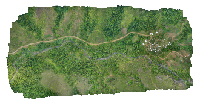
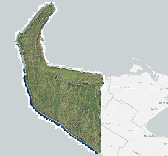
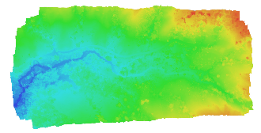
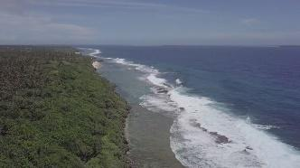

1. Objective
Download page as PDFObjective of This Guidance Note
The objective of this guidance note is to establish key principles for end use of unmanned aerial vehicles (UAVs) in a Pacific Island Country (PIC) context. The document addresses how, when, and for what applications UAVs should be used. For pilots who are new to UAV mapping, it also provides instructions and recommendations to ensure that imagery of high quality is generated for accurate integration with other geospatial layers.
The ultimate goal is to establish UAVs as the principal data collection and survey mapping instrument for Small Island Developing States in the Pacific region and beyond. As the principles and best practices described in this document are applicable globally, the plan is for this document to continue to evolve and for its online version to reflect the latest in UAV technology.
To take stock of the current operating conditions in the Pacific region, field tests were conducted in Tonga and Fiji in October 2017. Five survey mapping challenges were carried out to generate five types of typical geospatial data products that are high in demand (shown in table 1).1 Lessons learned and best practices derived from these exercises are offered throughout this note to help the reader better understand how most effectively to use UAVs for survey mapping. Other applications of UAVs, such as for cargo delivery, are beyond the scope of this note.
Flight itself constitutes only a small portion of the entire UAV operation (as explained in chapter 7). Post-flight data processing and data sharing with end users represent a much larger share of the operation, and they present huge challenges given the sheer volume of data that needs to be processed;2 challenges are even greater if time is limited. Important lessons on data sharing, learned from the Pacific Drone Imagery Dashboard (PacDID) project,3 have been integrated in this guidance note. Efficient access to imagery can lead to improved mapping work flows for disaster risk management and other applications.
Table 7. Five Data Types Generated During UAV Field Testing in Tonga and Fiji
| Survey type/UAV platform | Area | Output/file type | Output example | Output use/application |
| Small area (Challenge 1)
Fixed-wing |
10 km2 | 2D orthorectified mosaic
RGB and RGB+ NIR (GeoTIFF) |
 | General mapping, including delineating building footprints and road networks; location and geometric features of bridges and other key infrastructure, such as electricity/telephone poles, power lines; river embankments, bridges and land use and land cover. If an NIR channel is available, classification of vegetated areas, identification of permanent and temporary water bodies, etc. are possible. |
| Medium area (Challenge 2)
Fixed-wing with RGB camera |
50 km2 | 2D orthorectified mosaic
RGB (GeoTIFF) |
 | Same as Challenge 1. |
| Elevation
(Challenge 3) Multirotor with LiDAR sensor |
0.5 km2 | Surface model
Point cloud (GeoTIFF) |
 | Inputs for flood modeling, drainage design, transportation design, coastal engineering, landslide modeling (susceptibility), and erosion monitoring for slope stability studies. |
| Real-time, beyond line of sight (Challenge 4)
Delta wing fixed-wing |
0.5 km2 (10 km from take off location) | Video, photos, orthomosaic
(MP4, JPEG GeoTIFF) |
 | Near-real-time information collected by flying the UAV beyond line of sight for post-disaster reconnaissance, situational awareness, damage assessment, post-disaster mapping, etc. |
| Bathymetry (Challenge 5)
Multirotor |
0.5 km2 | Point cloud and DEM
(GeoTIFF) |

|
Tsunami and storm surge modeling, coastal inundation/erosion modeling, reef monitoring, etc. |
_Source: _ UAV4Resilience 2017
Note: RGB = red-green-blue; NIR = near infrared; DEM = digital elevation model. The field tests used various types of UAVs. All orthomosaic outputs are available from OpenAerialMap.org.
- Details on the field tests carried out to generate the five types of data products are in Table1. [return]
- The data size often runs into hundreds of gigabytes. [return]
- PacDID is a platform that leverages the OpenAerialMap (OAM) concept, making open imagery collected by satellites and UAVs easily available and accessible, particularly for the target audience in Pacific Island Countries. More information is available at Pacific Humanitarian Challenge (n.d.). [return]